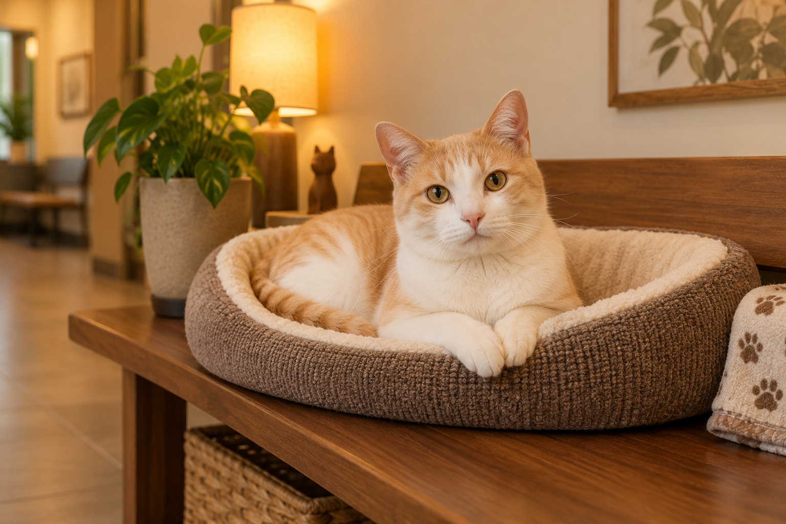
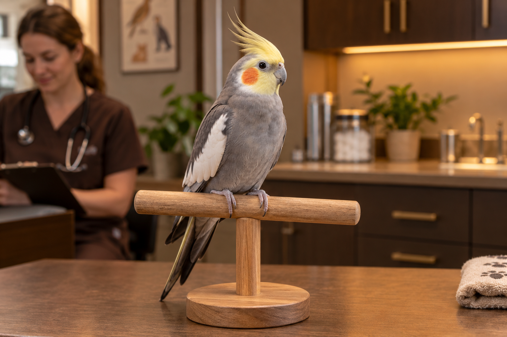

Přejít na obsah
CITRINE
VETERINÁRNÍ KLINIKA
O nás
Služby
Tým
Galerie
Pohotovost
Recenze
Ceník
Kontakt
Objednat se
☰
Galerie
Nahlédněte do našeho každodenního života.
Vše
Klinika
Pacienti
Péče

Klidné místo pro kočičí pacienty
Vyšetření bez zbytečného spěchu
I ti nejmenší jsou u nás vítáni

Péče o opeřené společníky
Moderní diagnostické zázemí